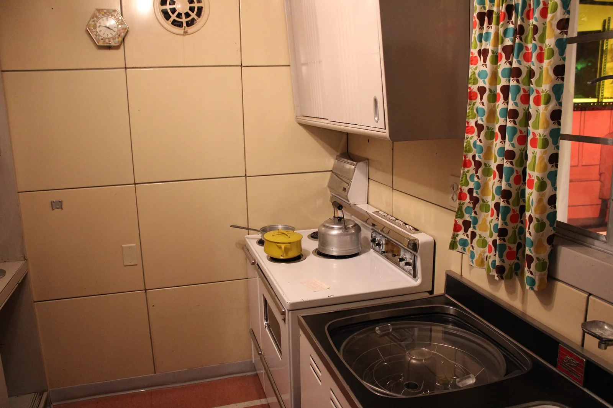

Home & everyday life - 1950s
The little things we remember about Grandma’s kitchen
A recipe tin, a well-used apron, and a table where there was always room for one more.

It started before you reached the door
Sometimes the first memory is a smell: something baking, coffee brewing, or onions softening in a pan. Every family kitchen was different, but many of us can still picture one that made us feel immediately welcome.
A drawer full of familiar mysteries
There might have been a hand-cranked eggbeater, measuring spoons on a ring, or a pastry cutter with a handle worn smooth. As children, we did not always know what everything was for. We knew only that someone could reach into that drawer and pull out exactly the right thing.
Recipes with a little history on them
A handwritten recipe carried more than ingredients. A stain in the corner, a crossed-out quantity, a note saying “a little more” could tell its own story. The best-loved recipes were not always the neatest. They were the ones that had been used.
The table did more than hold dinner
It could be a place for shelling peas, finishing homework, spreading out a board game, or listening to grown-ups talk. The chairs might not match. The table might be a little too small. Somehow, there was often a way to make room.
Keep one small detail
If you could bring back just one thing from a kitchen you loved, what would it be? The cookie tin? A favorite mug? Or the sound of someone saying, “Sit down. I’ll make you something.”
All stories · Explore the decades
← Back to the games · All articles · About · Privacy policy · Photo credits · Cookie settings